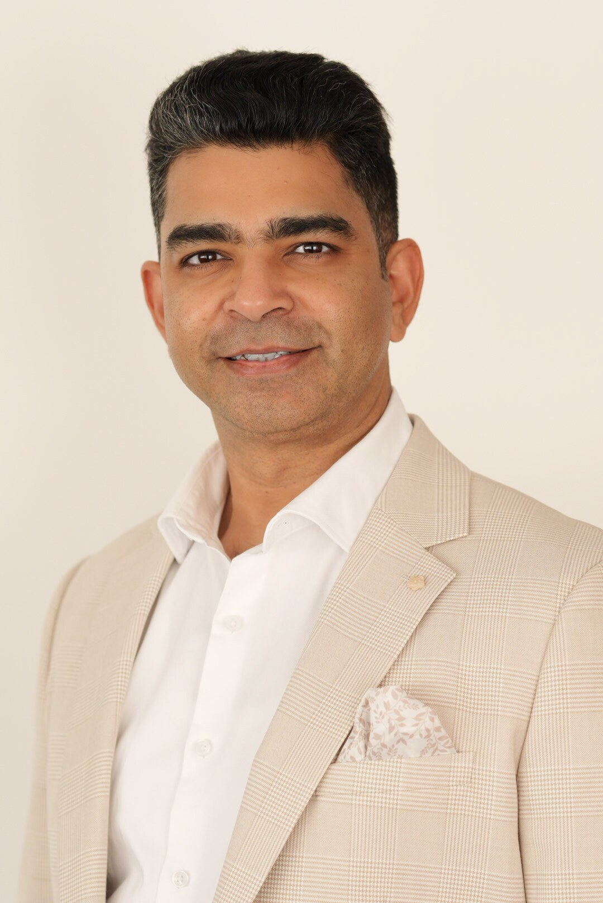

Principal Solutions Architect · Perth, WA
Amit
Kumar
Cloud, AI & Security Architecture
Helping enterprise and government leaders turn complex technology choices into secure, resilient and production-ready outcomes.

Enterprise architectureMicrosoft AzureAI platformsSecurity by designPlatform engineering
Executive profile
Senior judgement.
Delivery credibility.
A principal architect and trusted technical adviser with more than 25 years of experience designing, implementing and governing enterprise technology platforms.
Amit works across cloud, AI, security and infrastructure—translating business priorities and risk requirements into practical architectures, engineering standards and operating models. His experience spans Australian government, healthcare, energy, mining, education, financial services and global technology organisations.
Known for working collaboratively with executives, architects, engineers and delivery partners, he combines strategic direction with enough technical depth to guide the outcome from concept through operationalisation.
Australian citizen · Eligible for Baseline security clearance
Core capabilities
Architecture leadership across the connected technology estate.
From strategic intent and design authority to repeatable engineering, governance and operational readiness.
Cloud & AI Architecture
Enterprise architecture, cloud strategy, Microsoft CAF and WAF, Azure landing zones, Microsoft Foundry, Azure OpenAI, AI Search, semantic search and responsible AI foundations.
Platform Engineering
Infrastructure as Code with Bicep and Terraform, AKS, DevSecOps, CI/CD, reusable platform patterns, automated governance and developer enablement.
Security & Resilience
Zero Trust architecture, identity and access governance, cloud security, Microsoft Defender, Sentinel, private connectivity, disaster recovery and operational resilience.
Integration & Data
API Management, AI gateways, Function Apps, Service Bus, Event Grid, Logic Apps, Databricks and secure multi-cloud Azure and AWS data platforms.
Governance & FinOps
Azure Policy, management groups, cloud economics, optimisation, observability, architecture assurance and accountable cloud operating models.
Technology Leadership
Executive engagement, presales, design authority, multidisciplinary team leadership, vendor management, mentoring, quality assurance and capability transfer.
Selected impact
Complex platforms made practical.
Representative outcomes across enterprise AI, cloud foundations, integration, operational technology and governance.
Production-ready AI platform for St John WA
Designed and built an enterprise AI platform spanning Application Gateway, APIM/AI Gateway, Microsoft Foundry, Web Apps, Azure OpenAI, Azure AI Search and semantic search—delivered through Infrastructure as Code and DevSecOps with private connectivity, data protection and responsible-AI guardrails.
Event-driven integration for the Department of Communities
Established governed API and asynchronous integration patterns using API Management, Function Apps, Service Bus, Event Grid and Logic Apps to connect enterprise applications and systems securely.
Azure Guardian used by 50+ clients
Designed and built a repeatable Azure advisory, optimisation and FinOps governance service, combining Well-Architected guidance, operational standards and automated policy guardrails.
Secure cloud platforms for Synergy
Applied AKS experience to the Virtual Power Plant initiative and designed a segregated Azure OT tenancy that separated operational technology from corporate IT while supporting resilient integration.
Global Azure and AWS data platform
Architected a secure multi-region data platform spanning Azure, AWS, Databricks, Data Factory, private networking, key management and policy-enforced data perimeter controls.
$1.5M+ in verified cloud savings
Established Azure governance and optimisation controls that improved security, resource utilisation and financial accountability while delivering material verified savings.
Career experience
A career built across architecture, engineering and operations.
Insight Enterprise · Perth
Principal Consultant — Azure Cloud, AI, Security & Infrastructure
Partnered with CIOs and technology leaders on cloud and AI strategy; led architecture across enterprise AI, landing zones, integration, platform engineering, governance, FinOps, Zero Trust, observability and resilience for major Australian clients.
Avanade · BHP
Manager, Cloud Engineering
Technical lead architect in the BHP Cloud Factory, designing Azure Stack for mining OT, modernising applications and consolidating legacy Azure tenancies while leading onshore and offshore specialists.
Insight Australia · Perth
Solutions Architect — Infrastructure & Cloud Services
Delivered hybrid Azure foundations, application modernisation, governance, data platforms, event-driven integration and DevOps automation for RAC Insurance and WA Government departments.
R-Group & Espire · Perth
Solutions Architect
Designed large-scale government collaboration platforms, hybrid cloud and Office 365 migrations, Azure foundations and enterprise infrastructure solutions.
Australia & India
Technology and Managed Services Leadership
Led enterprise infrastructure, applications and service delivery for ASG Group, Porsche India, Stryker India, American HigherEd and the British Council, including a 40+ person managed-services team and nationwide technology programs.
Credentials
Continuous learning backed by enterprise practice.
Microsoft
- Azure AI Engineer Associate (AI-102)
- Azure Solutions Architect Expert
- Cybersecurity Architect Expert (SC-100)
- Azure Security Engineer Associate (AZ-500)
- Microsoft Certified Trainer
Architecture & service
- TOGAF 9.1
- ITIL V3 Expert
- ITIL 4 Foundation
- DevOps Foundation
- ISO 20000 & BCP planning training
Education
- MBA — Operations & Information Technology
- Institute of Management Technology, Ghaziabad
- Bachelor of Commerce
- University of Delhi
Connect
Let’s discuss your next cloud or AI decision.
For enterprise architecture, advisory, assurance or platform delivery conversations, connect through Navoraa.
lead@navoraa.com.au ↗